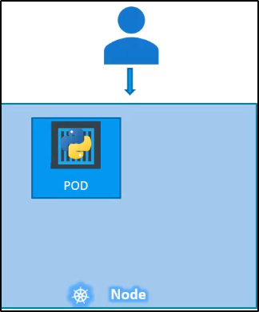

Replication Controllers and ReplicaSets
I Controllers sono il cervello di Kubernetes.
Se vuoi darti una ripassata, ripassa su "Kubernetes Overview - Kubernetes Overview".
I Controller, in breve, monitorano gli oggetti di Kubernetes e rispondono in modo adeguato.
In questo caso, studiamo un tipo di controllo particolare: il Replication Controller.
Perché abbiamo bisogno dei Controller?
Supponiamo di avere il nostro caso vecchio:
singolo nodo, singolo POD, singolo container.

Se l'applicazione crasha, il container faila e il POD crasha.
Se succede, l'utente potrebbe non avere accesso all'applicazione!

Per far si che l'applicazione possa continuare a runnare
e l'utente possa continuare le sue operazioni,
possono essere creati altri PODs (su stesso nodo o altri nodi).
Il Replication Controller è il Controller che si occupa di questo caso!

Da notare bene: Puoi usare il Replication Controller
anche se hai bisogno di un solo POD per nodo.
Inoltre, tiene sotto controllo i POD e il loro stato.
Un buon motivo per usare il Replication Controller
è per il Load Balancing e Scaling.

Replication Controller vs Replica Set
Replication Controller vs Replica Set.
Anche se hanno lo stesso scopo, non sono lo stesso elemento.
Replication Controller è la vecchia tecnologia rimpiazzata da Replica Set.
Replica Set è il nuovo modo consigliato per settare le applicazioni.
Hanno piccole differenze, ma hanno lo stesso scopo.
Come creare un Replica Set
Bisogna specificare il tipo in kind, mentre per la sezione spec:
dobbiamo specificare il template di POD da replicare.

Per la sezione POD di spec: ci basta usare le linee importanti,
come i metadata e le spec del POD.
Le apiVersion le abbiamo già definite e non dobbiamo specifiare all'interno che è un POD.

Ora ci rimane da dire: quante repliche fare?
Basta settare un parametro, figlio di spec "replicas".

Ora diamo uno sguardo a ReplicaSets.
Ecco alcune differenze rispetto al ReplicationController:
L'API è "apps/v1", necessita di app prima.- NB: nel caso sbagli sopra, ti darà un errore simile:

Un parametro "selector": indica quale parte è del ReplicaSet.
Questo perché possiamo gestire parti non create dal ReplicaSet, al momento della creazione.
Esempio: Quando vi sono PODs creati prima della creazione del ReplicaSets.,
che matchano le lables presenti nel selectors.
In questo modo, il ReplicaSets prenderà in considerazione anche queste parti
quando crea le replica.
Infatti, il "selector" è una delle differenze sostanziali tra Replication Controller e ReplicaSets.
"selector" non è richiesto per il Replication Controller, anche se puoi metterlo!
Questo perché il Replication Controller assume che sia la stessa label del POD definito.

Perché usiamo i Labels e Selectors?
Esempio: supponiamo che abbiamo deployato la nostra applicazione con 3 PODs.
Vogliamo creare un ReplicationController/ReplicaSets per far si che
questi 3 PODs siano sempre attivi in ogni momento.
Questo è proprio il caso per usare i ReplicaSets.
Puoi usarli per monitorare parti esistenti.
Quando crei i ReplicaSets, crea i 3 PODs nel caso non esistano già.
Il ruolo dei ReplicaSets è di monitorare i PODs e di deployarne
di nuovi quando questi failano.
Ora: come fa il ReplicaSets a sapere quali parti monitorare?
Tramite i Labels.


Altra domanda: come facciamo a scalare nel caso di più utenti?
Esistono diversi modi:
1) Cambi il numero di "replicas" (e.g. da 3 a 6) ed usi "kubectl replace -f"

2) Possiamo usare "kubectl scale --replicas" per scalare il numero di replicas, passando il file di configurazione.
NB: Questo scala gli elementi, ma non cambia il numero di replicas nel file config yaml!

Esistono altre opzioni per scalare in base al Load Balance, ma verrà discusso in sezioni successive.
Comandi utili: